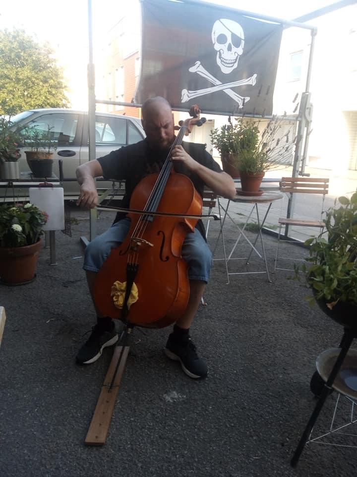

Nyfiken och kunskapstörstande person som helt har sadlat om från mera fysiskt krävande jobb till programmering
och testning. Brukar skämtsamt marknadsföra mig som en schweizisk armékniv – funkar till det
mesta.
På tidigare jobb har jag kunnat hoppa in lite överallt vid behov. Diplomatisk och mån om att folk har det bra runt
omkring mig. Jag trivs i team men är också självgående och strukturerad.
Programmering och testning är ett brett spektrum. Eftersom jag gillar att testa nya saker är inget hugget i sten.
Jag trivs i team men är också självgående och strukturerad.
Född och uppvuxen i Karlskrona.
Gör just nu praktik på Iris Kraft där jag bland annat gör en hemsida för paus it-initiativ.
Referenser, betyg och andra dokument kan lämnas mot begäran.
Ställer gärna upp på intervju.
Kim Nordin
Gullabergsvägen 10 B
371 43 KARLSKRONA
📞 0760 – 273 277
✉️ csnoddan@hotmail.com